set.seed(1) # for reproducibility of the experiments / random processes
# Libraries
library(tidyverse) # install with install.packages("packagename")
library(broom) # here, useful for "tidying" prcomp objects
library(patchwork) # for displaying several ggplots in a layout
library(GGally) # for pairwise scatter plots
library(plotly) # for interactive visualization
library(ggfortify) # for built-in ggplot2 PCA plots
library(ggrepel) # for avoiding overlapping labels
theme_set(theme_light()) Principal Component Analysis
UCLouvain - Winter 2023
Example 1: Taste of most commonly eaten food in the NL
The “Taste, Fat and Texture Database - taste values Dutch Foods” is a database providing the subjective taste of the most commonly eaten food in the NL. It has been compiled by Monica Mars et al., in the context of the “SVT (Smaak, Vet en Textuur)” study. Briefly, trained panelists reported their perceived intensities of the 5 basic tastes, i.e. sweet, salt, sour, bitter and umami, as well as fat sensation for 627 foods. More information regarding the study and the database can be found here.
We load the data csv file with
tastes <-
read_csv(
"data/food_taste_NL/20170202 Sensory database v004.csv",
show_col_types = FALSE
)
dim(tastes)[1] 627 36# str(tastes)
# summary(tastes)We see that the first columns (1 - 12) contain food descriptors, while the remaining columns provide the taste data. Specifically, the taste data contain the number of panelists that tasted the food (no_), the mean taste intensity (m_), and the standard deviation (sd_) or error (se_).
The columns we are interested in exploring are those containing the mean taste intensity (i.e., those starting with m_ )
But we noticed (e.g., with summary(tastes) that some food have missing values, so, we remove those food items first.
tastes_complete <-
tastes %>%
filter(complete.cases(across(starts_with("m_"))))
nrow(tastes_complete) - nrow(tastes) # number of food items that were removed[1] -24Also, to facilitate interpretation down the analysis, we select some food groups we are especially interested in.
tastes_selected <-
tastes_complete %>%
filter(Food_group_EN %in%
c("(non) alcoholic beverages",
"Bread", "Fruit", "Vegetables",
"Nuts, seeds and savoury snacks",
"Pastry, Cakes and Biscuits", "Cheese", "Fish",
"Meat, meat products and poultry",
"Milk and milk products"
)
)t <- tastes_selected %>% select(starts_with("m_"))
# since we only keep the average value,
# we rename the columns and remove the "m_" prefix
colnames(t) <- colnames(t) %>% str_remove(.,"^m_")
head(t)# A tibble: 6 × 6
sweet sour bitter umami salt fat
<dbl> <dbl> <dbl> <dbl> <dbl> <dbl>
1 46 46 3 1 1 5
2 56 20 7 0 2 4
3 51 33 6 0 2 3
4 28 41 8 1 2 8
5 1 1 4 1 1 4
6 10 23 1 33 32 14summary(t) sweet sour bitter umami
Min. : 1.00 Min. : 0.00 Min. : 0.000 Min. : 0.000
1st Qu.: 6.00 1st Qu.: 2.00 1st Qu.: 1.000 1st Qu.: 1.000
Median :11.00 Median : 6.00 Median : 2.000 Median : 1.000
Mean :19.71 Mean :12.04 Mean : 5.673 Mean : 7.004
3rd Qu.:34.00 3rd Qu.:18.75 3rd Qu.: 4.000 3rd Qu.:11.000
Max. :70.00 Max. :73.00 Max. :74.000 Max. :44.000
salt fat
Min. : 0.00 Min. : 1.00
1st Qu.: 2.00 1st Qu.: 6.00
Median : 7.00 Median :15.00
Mean :14.47 Mean :23.66
3rd Qu.:18.75 3rd Qu.:40.00
Max. :67.00 Max. :79.00 Data exploration
Et first take a quick look at the data and the correlation between variables.
t_long <-
t %>%
mutate(i = row_number()) %>%
pivot_longer(cols = -i, names_to = "taste", values_to = "mean intensity")
ggplot(t_long, aes(x = `mean intensity`)) +
geom_histogram(bins = 30) +
facet_grid(taste ~ .)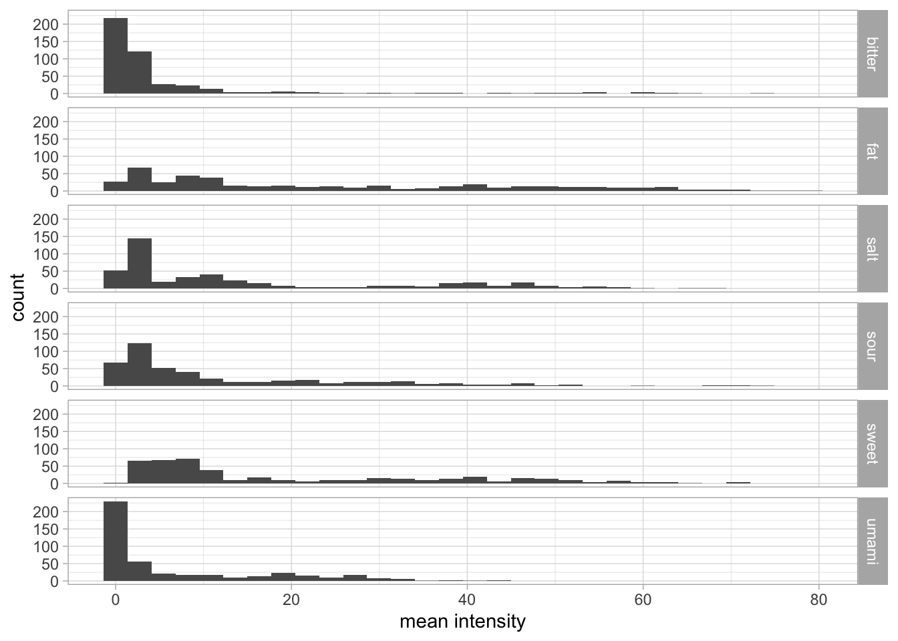
GGally::ggpairs(t, axisLabels = "none", mapping = ggplot2::aes(alpha = 0.25)) +
theme(strip.text = element_text(color = "black"))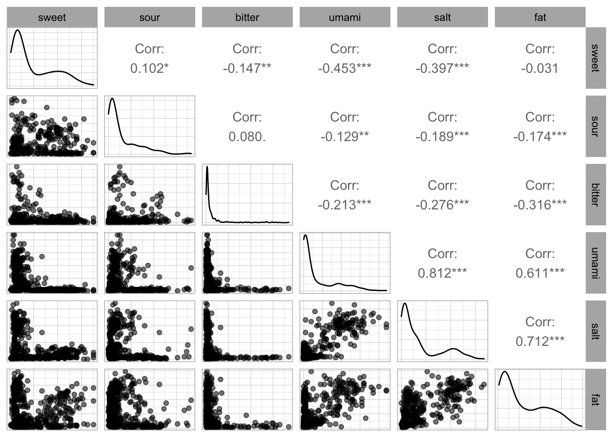
Salt and Umami
Before performing a PCA on the full dataset with all variables, let’s dive in the relationship between the salt and umami flavors and perform a 2D PCA.
# scatter plot of the two variables
g_scatter1 <-
ggplot(t, aes(x = salt, y = umami)) +
geom_point(size = 2, alpha = 0.5) +
coord_fixed()
# scatter plot of the standardize variables (subtracting the mean and dividing by the sd)
t_scaled <- t %>% scale() %>% as.data.frame()
g_scatter2 <-
ggplot(t_scaled, aes(x = salt, y = umami)) +
geom_point(size = 2, alpha = 0.5) +
coord_fixed()
g_scatter1 + g_scatter2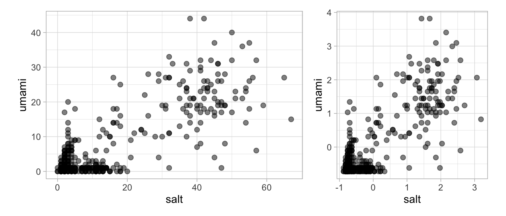
# finding the direction that maximizes the variance of the projected points
# we'll come back on the use of the `prcomp` function in the next section
pca_t_salt_umami <- prcomp(t_scaled[,c("salt","umami")])
# plotting the projected points onto the 3 axes: the salt, the umami, and the max variance axis
ggplot(t_scaled) +
geom_point(aes(x = salt, y = "salt"), col = "steelblue1", alpha = 0.25) +
geom_point(aes(x = umami, y = "umami"), col = "orange", alpha = 0.25) +
geom_point(data = pca_t_salt_umami$x %>% as.data.frame(),
aes(x = PC1, y = "through line"), col = "deeppink", alpha = 0.25) +
ylab("") + xlab("projection")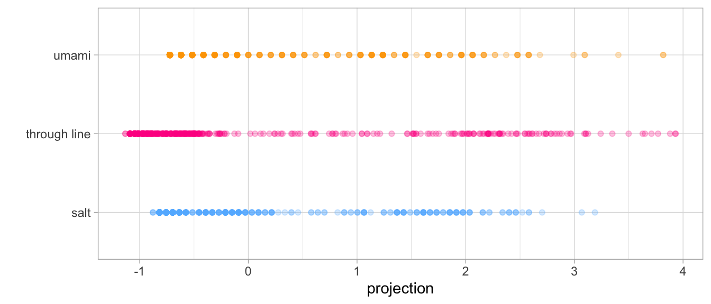
pca_t_salt_umami$x[,1] %>% var() # the variance of the projected points on the max variance axis is indeed larger than 1 (the variance in the original axes)[1] 1.812316The direction that maximizes the variance is not the same as the directions of the linear models:
lm_umami <- lm(umami ~ salt, data = t_scaled)
t_scaled$umami_lm <- lm_umami$fitted.values
lm_salt <- lm(salt ~ umami, data = t_scaled)
t_scaled$salt_lm <- lm_salt$fitted.values
projections_on_PC1 <- pca_t_salt_umami$x
projections_on_PC1[,2] <- 0
projections_on_PC1 <- projections_on_PC1 %*% t(pca_t_salt_umami$rotation)
t_scaled$salt_pc <- projections_on_PC1[,1]
t_scaled$umami_pc <- projections_on_PC1[,2]
g_umami <-
ggplot(t_scaled, aes(x = salt, y = umami)) +
geom_point() +
geom_point(aes(y = umami_lm), col = "steelblue1") +
geom_line(aes(y = umami_lm), col = "steelblue1") +
geom_segment(
aes(xend = salt, yend = umami_lm), col = "steelblue1", alpha = 0.5
) +
coord_fixed()
g_salt <-
ggplot(t_scaled, aes(x = salt, y = umami)) +
geom_point() +
geom_point(aes(x = salt_lm), col = "orange") +
geom_line(aes(x = salt_lm), col = "orange") +
geom_segment(
aes(xend = salt_lm, yend = umami), col = "orange", alpha = 0.5
) +
coord_fixed() # + coord_flip()
g_pc <-
ggplot(t_scaled, aes(x = salt, y = umami)) +
geom_point() +
geom_point(aes(x = salt_pc, y = umami_pc), col = "deeppink") +
geom_line(aes(x = salt_pc, y = umami_pc), col = "deeppink") +
geom_segment(
aes(xend = salt_pc, yend = umami_pc), col = "deeppink", alpha = 0.5
) +
coord_fixed()
g_all <-
ggplot(t_scaled, aes(x = salt, y = umami)) +
geom_point() +
geom_line(aes(y = umami_lm), col = "steelblue1") +
geom_line(aes(x = salt_lm), col = "orange") +
geom_line(aes(x = salt_pc, y = umami_pc), col = "deeppink") +
coord_fixed()
(g_umami + g_salt + g_pc + g_all) + plot_layout(ncol = 4)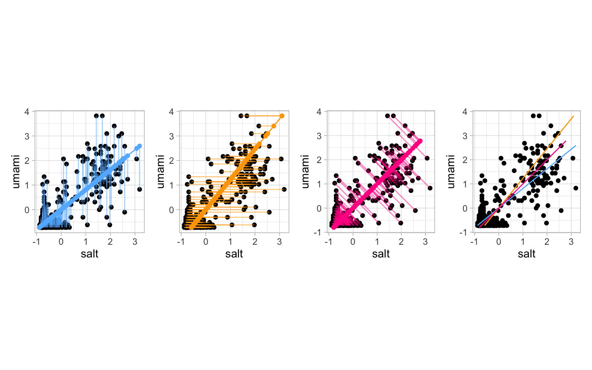
tibble(PC = 1:2, sdev = pca_t_salt_umami$sdev) %>%
mutate(
var = sdev ^ 2,
perc = 100 * var/sum(var)
) %>%
ggplot(., aes(x = PC, y = perc)) +
geom_bar(stat = "identity") +
ylab("% of tot var.") +
scale_x_continuous(breaks = c(1:2))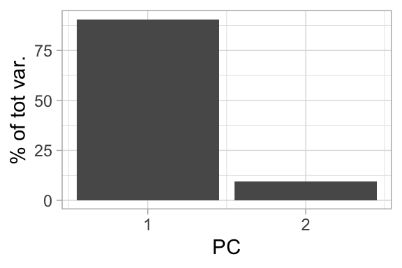
3D toy example
Before performing the PCA on our food dataset, we can explore PCA on a “toy” 3-variable dataset where most of the variance is distributed along one line in the 3D space.
set.seed(5) # for the reproducibility of this chunck
N <- 100 # the number of samples
l1 <- rnorm(N) # the latent variable
coeffs <- runif(3, min = -1, max = 1) # the coefficients determining the relationship between the latent variable and the three observed variables (in X)
X <- # the observe variables
l1 %*% t(coeffs) + # Each variable is proportional to the latent variable
rnorm(3*N, sd = 0.2) # we add some random noise
colnames(X) <- c("x","y","z")
# 3D plot of the data
fig <-
plotly::plot_ly(
X %>% as.data.frame(), type = "scatter3d", mode = "markers",
x = ~x, y = ~y, z = ~z
)
pca_toy_3d <- prcomp(X, scale = TRUE) # PCA of the toy data
# we compute the projection of the points on the 1st PC line.
projections_on_PC1 <- pca_toy_3d$x
projections_on_PC1[, 2:3] <- 0
projections_on_PC1 <- projections_on_PC1 %*% t(pca_toy_3d$rotation)
colnames(projections_on_PC1) <- c("x","y","z")
# we add the PC line to our 3D plot
fig <-
fig %>% plotly::add_lines(
data = projections_on_PC1 %>% as.data.frame(),
type = "scatter3d", mode = "line",
x = ~x, y = ~y, z = ~z
)
figPCA
To perform a PCA in R, we use the built-in prcomp function. It is preferred to the princomp function because prcomp uses SVD, which is more accurate than using the eigen function on the covariance matrix, which is what princomp does.
We can also use the dudi.pca function from the ade4 package. This package, along with the factoextra package, have a lot of very useful (visualization) functions for PCA. We will come back on this package later. In the meanwhile, coding these functions “from scratch” is a good exercise to understand what is “under the hood”.
Scale of the data
While all of our taste variables were measured on a scale from 1 to 100, the range and variance of each variable differ. That is because we filtered for some specific food groups, but also because, inherently, these variables presented differences that are due to the way tastes are perceived by humans.
colMeans(t) # we observe substantial differences in means sweet sour bitter umami salt fat
19.708520 12.044843 5.672646 7.004484 14.470852 23.663677 apply(t, 2, var) # variances sweet sour bitter umami salt fat
306.92159 199.33282 139.10608 93.91908 271.31488 425.06866 apply(t, 2, range) # and ranges (e.g., umami has a much smaller range) sweet sour bitter umami salt fat
[1,] 1 0 0 0 0 1
[2,] 70 73 74 44 67 79Because of that, we need to scale the data either before performing the PCA, or make sure that the option scale is TRUE in the PCA function itself.
PCA and variance explained by each PC
pca_tastes <- prcomp(t, scale = TRUE) # this returns a `prcomp` objectBy default, any prcomp object comes with a built-in plot function, which displays the variance explained by each component.
plot(pca_tastes)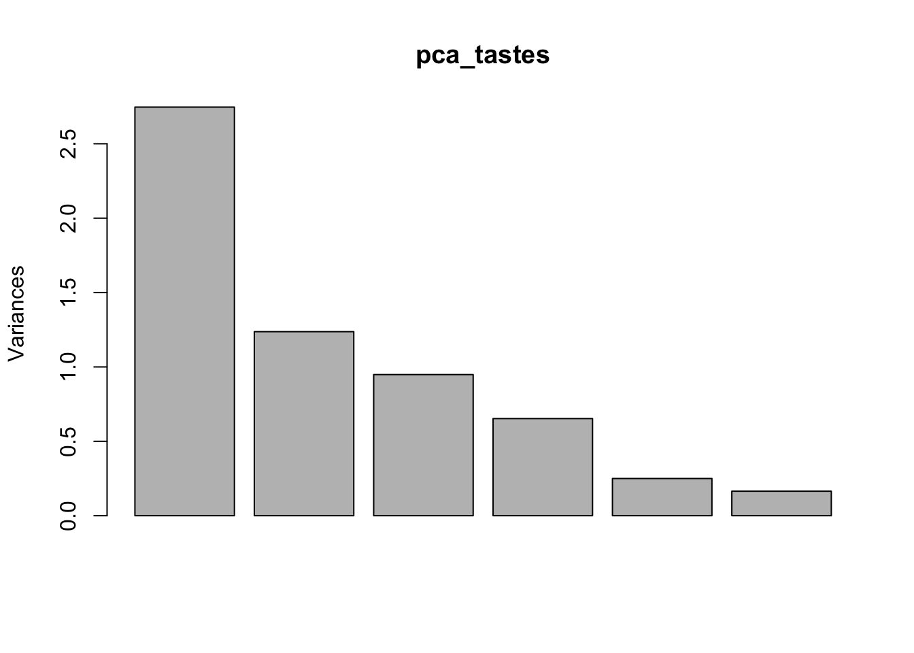
We can also re-create this visualization using the ggplot2 package, with some formatting of the PCA results, aided by the broom package.
pca_var <-
pca_tastes %>%
broom::tidy(matrix = "eigenvalues")
plot_pca_var <- function(pca_var) {
g_var <-
ggplot(pca_var, aes(PC, percent)) +
geom_col(fill = "steelblue1", alpha = 0.8) +
scale_x_continuous(breaks = 1:8) +
scale_y_continuous(
"% of variance",
labels = scales::percent_format(),
expand = expansion(mult = c(0, 0.01))
)
g_cumvar <-
ggplot(pca_var, aes(PC, cumulative)) +
geom_col(fill = "steelblue1", alpha = 0.8) +
scale_x_continuous(breaks = 1:8) +
scale_y_continuous(
"Cummulative % of variance",
breaks = seq(0,1, by = 0.2),
labels = scales::percent_format(),
expand = expansion(mult = c(0, 0.01))
)
g_var + g_cumvar
}plot_pca_var(pca_var)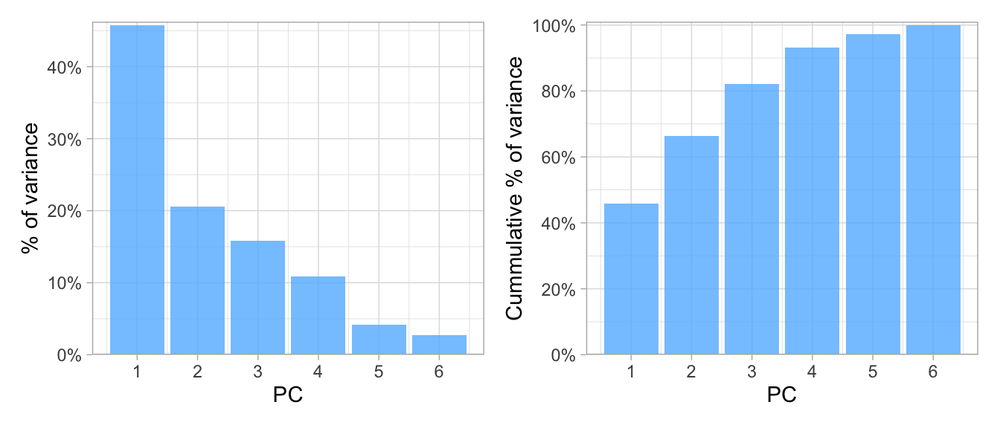
We see that 3 PCs explain over 80% of the variance.
From the original coordinate system to the PC system.
The prcomp function returns two other important outputs:
The
rotationmatrix, which is the matrix that allows to compute the position of the samples in the PC system from the original dataThe
xmatrix, which is the position of the samples in the PC system.
We have that \(X = X_0 R\) where \(X\) are the sample position in the PC system, \(X_0\) the sample position in the original space, and \(R\) the rotation matrix.
pca_tastes$rotation PC1 PC2 PC3 PC4 PC5 PC6
sweet -0.2684148 -0.69540416 0.0002199093 -0.48304468 0.44358387 -0.11944742
sour -0.1750094 0.01868802 -0.9815845534 0.01295745 -0.06872644 -0.02496032
bitter -0.2278208 0.64187074 0.0398821163 -0.72680576 0.06461954 -0.04568131
umami 0.5416475 0.14434247 -0.1523808153 -0.02213633 0.65865622 0.47775020
salt 0.5646513 0.04008174 -0.0868622194 -0.08733171 0.09134523 -0.80996702
fat 0.4829180 -0.28569996 -0.0643131008 -0.47972543 -0.59343271 0.31421439pca_tastes$x %>% as_tibble()# A tibble: 446 × 6
PC1 PC2 PC3 PC4 PC5 PC6
<dbl> <dbl> <dbl> <dbl> <dbl> <dbl>
1 -2.01 -1.01 -2.15 -0.00965 0.540 -0.147
2 -1.96 -1.22 -0.311 -0.535 0.908 -0.298
3 -2.05 -1.04 -1.22 -0.301 0.742 -0.299
4 -1.66 -0.0669 -1.80 0.0988 0.0553 -0.0382
5 -0.802 0.787 0.989 1.15 -0.346 0.220
6 1.93 0.709 -1.25 0.638 1.82 0.337
7 -2.16 1.78 -0.336 -1.49 0.344 -0.250
8 -2.03 -0.965 -1.21 -0.358 0.693 -0.280
9 -1.64 1.11 0.220 -0.716 0.248 -0.0746
10 -2.11 2.46 -2.03 -1.05 -0.0759 -0.0199
# … with 436 more rowsall(pca_tastes$x == ((t %>% scale()) %*% pca_tastes$rotation)) # should be TRUE[1] TRUECircle of correlation
Now, we want to understand how the original variables correlate with the new PCs.
To do so, we plot the “circle of correlation”, which is a visualization of the correlation between each of the original variable and two selected PCs (usually the first ones as they explain most variation in the data).
plot_correlation_circle <- function(data, pca_res, pca_var, PCx = 1, PCy = 2) {
# first, we compute the correlations between the data in the original axes and the data in the PC system
correlations <- cor(data, pca_res$x) %>% as.data.frame()
correlations$pcx <- correlations[,PCx]
correlations$pcy <- correlations[,PCy]
correlations <-
correlations %>%
mutate(column = rownames(correlations))
x_lab <- str_c("PC", PCx, " (",round(100 * pca_var$percent[PCx]),"%)")
y_lab <- str_c("PC", PCy, " (",round(100 * pca_var$percent[PCy]),"%)")
arrow_style <-
arrow(
angle = 20, ends = "first", type = "closed", length = grid::unit(8, "pt")
)
ggplot(correlations %>% as.data.frame(),
aes(x = pcx, y = pcy, col = column)) +
geom_vline(xintercept = 0, col = "gray", linetype = 2) +
geom_hline(yintercept = 0, col = "gray", linetype = 2) +
annotate(
"path",
x = cos(seq(0, 2*pi,length.out=100)),
y = sin(seq(0, 2*pi,length.out=100)),
col = "gray"
) +
ggrepel::geom_label_repel(
aes(x = pcx, # + 0.05 * pcx / sqrt(pcx^2 + pcy^2),
y = pcy, # + 0.05 * pcy / sqrt(pcx^2 + pcy^2),
label = column),
segment.colour = NA
) +
geom_segment(aes(xend = 0, yend = 0), arrow = arrow_style) +
xlab(x_lab) +
ylab(y_lab) +
guides(col = "none") +
coord_fixed()
}
g_CC_1_2 <- plot_correlation_circle(data = t, pca_res = pca_tastes, pca_var, 1, 2)
g_CC_1_3 <- plot_correlation_circle(data = t, pca_res = pca_tastes, pca_var, 1, 3)
g_CC_1_2 + g_CC_1_3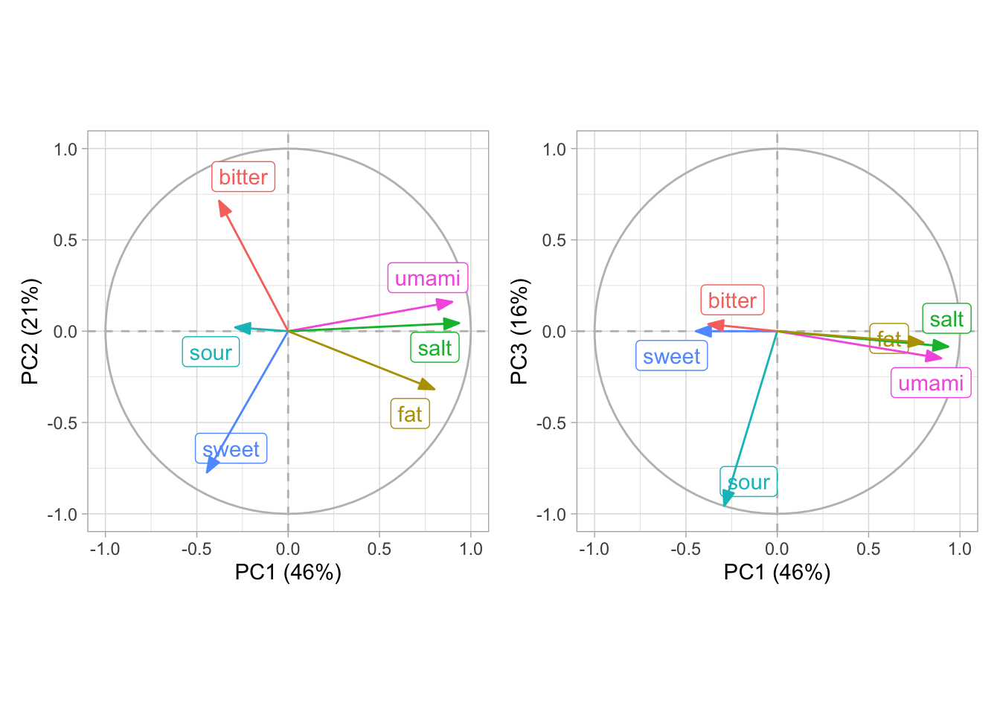
From these circles of correlations, we make the following observations:
- The salt and umami flavors are highly with the first principal direction (PC1) mostly discriminate between what is salty or not.
- The sweet and bitter flavors are most correlated with the second principal direction, but with inverse correlations (sweet is anti-correlated with PC2).
- The sour flavor has a high correlation with the 3rd PC (but not correlated with the first 2 PC).
The closer to the unitary circle the arrows, the better are these variable represented in the selected PC plane. So, here, the sour flavor is not well represented in the PC1-PC2 plane.
We also note that variables that are well represented in a given PC plane and that are highly correlated with each other (e.g., salt and umami are both well represented in the PC1 - PC2 plane and correlate with each other), have low angles between their correlation circle vectors. That does not hold if variables are not well represented (i.e., have small arrows).
cor(t) sweet sour bitter umami salt fat
sweet 1.00000000 0.10152612 -0.14694627 -0.4529072 -0.3971764 -0.03096901
sour 0.10152612 1.00000000 0.08014155 -0.1285998 -0.1885879 -0.17400469
bitter -0.14694627 0.08014155 1.00000000 -0.2125346 -0.2757778 -0.31579780
umami -0.45290724 -0.12859983 -0.21253457 1.0000000 0.8123162 0.61067023
salt -0.39717636 -0.18858792 -0.27577777 0.8123162 1.0000000 0.71196754
fat -0.03096901 -0.17400469 -0.31579780 0.6106702 0.7119675 1.00000000Samples in the PC space
Now that we have a good understanding of how the different variables correlate with the PCs and related with each other, we might be interested in looking at the sample data in the PC coordinate system as it maximizes the variance along the axes.
Instead of the 16 plots showing all the pairwise scatterplots (GGally::ggpairs), we hope that one or two plots will suffice in displaying how food relate to each other in terms of tastes.
The sample coordinates in this new coordinate system is given by the x matrix. Again, we use the functions from the broom package to provide objects that are easier to manipulate and (gg)plot than the original prcomp object.
# Sample PCs + broom::augment add the original dataset to the sample PCs
Sample_PCs <- pca_tastes %>% broom::augment(tastes_selected)
plot_sample_PCs <- function(Sample_PCs, pca_var, PCx, PCy, annot = NULL){
Sample_PCs$pcx <- Sample_PCs[,str_c(".fittedPC",PCx)] %>% unlist()
Sample_PCs$pcy <- Sample_PCs[,str_c(".fittedPC",PCy)] %>% unlist()
g <-
ggplot(Sample_PCs,
aes(x = pcx, y = pcy,
color = Food_group_EN,
label = Product_description_EN,
label2 = Food_code)
) +
coord_fixed(pca_var$std.dev[PCy]/pca_var$std.dev[PCx]) +
geom_vline(xintercept = 0, col = "gray") +
geom_hline(yintercept = 0, col = "gray") +
geom_point(size = 1.5) +
scale_color_discrete("Food group") +
xlab(str_c("PC", PCx," (",round(100 * pca_var$percent[PCx]),"%)")) +
ylab(str_c("PC", PCy," (",round(100 * pca_var$percent[PCy]),"%)"))
if (!is.null(annot)) {
annot$pcx <- annot[,str_c(".fittedPC",PCx)] %>% unlist()
annot$pcy <- annot[,str_c(".fittedPC",PCy)] %>% unlist()
g <-
g +
geom_point(data = annot, col = "black", shape = 1, size = 2) +
geom_text(data = annot,
aes(label = Product_description_EN),
col = "black", vjust = 0, hjust = 0, nudge_x = 0.1
)
}
g
}Let’s plot the sample projections in the first 2 PCs and color the samples by the food group they belong to:
plot_sample_PCs(Sample_PCs, pca_var, PCx = 1, PCy = 2)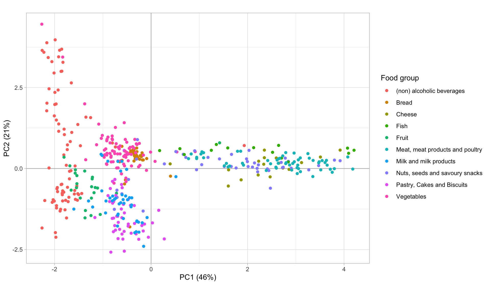
We observe that the food items from the same group tend to cluster together.
For example, most fruits are in the low left corner, in the area dominated by the sweet flavor.
One thing to pay attention to is that the scale of the axes is important.
If we compare the two plots below, which of the two plots do you think provides the most accurate representation of the variance along the two axes?
(
plot_sample_PCs(Sample_PCs, pca_var, PCx = 1, PCy = 2) +
guides(col = "none")
) +
(
plot_sample_PCs(Sample_PCs, pca_var, PCx = 1, PCy = 2) +
coord_fixed(ratio = 2) +
guides(col = "none")
) 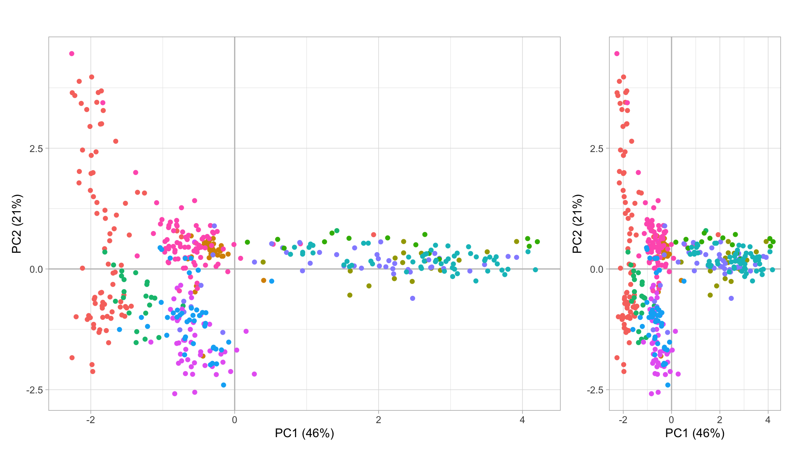
The one on the left does. PC1 explains 46% of the variance, so we expect samples to be more spread out along that axis.
If you go back in the code of the function plot_sample_PCs, you will notice that there is a line of code that fixes the coordinate such that the aspect ratio of the plot is proportional to the ratio of the standard deviation explained by each CP.
Remember that to explain at least 80% of the total variation, we need at least 3 CPs.
So, let’s visualize the sample projections in each of the 3 first CPs and add annotations for some “landmark” products.
selected_food <-
Sample_PCs %>%
filter(Food_code %in%
#c(395, 1523, 1468, 1885, 2793, 150, 151, 2395, 7, 27272, 2997 )
c(489, 1655, 632000, 644, 151, 150, 7, 1589, 12121215, 1100)
)
g_proj_1_2 <- plot_sample_PCs(Sample_PCs, pca_var, 1, 2, annot = selected_food)
g_proj_1_3 <- plot_sample_PCs(Sample_PCs, pca_var, 1, 3, annot = selected_food)
(g_proj_1_2 / g_proj_1_3) + plot_layout(guides = 'collect')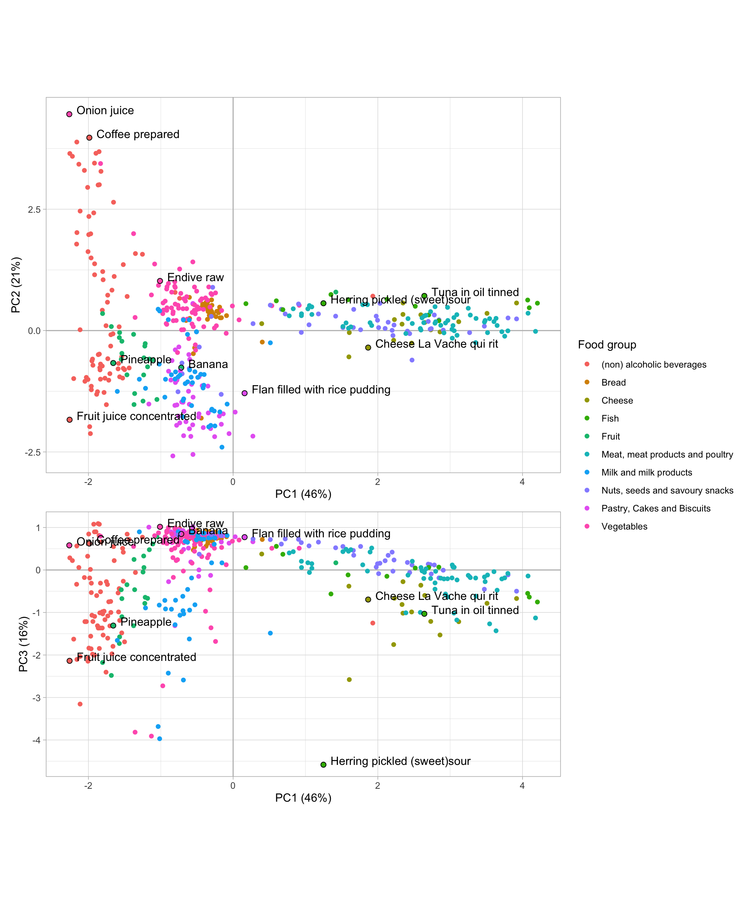
If you are interested in checking more products, interactive visualizations may be useful. You can transform any ggplot viz into an interactive one with the plotly::ggplotly function. Note that these will not render in pdf format (but they will in html).
# interactive view
plot_sample_PCs(Sample_PCs, pca_var, 1, 2) %>% plotly::ggplotly()plot_sample_PCs(Sample_PCs, pca_var, 1, 3) %>% plotly::ggplotly()Using the plotly library, we can also create 3D visualizations of the first 3 CPs.
# 3D view to explore the main 3 dimensions
PCA_3D <-
plotly::plot_ly(
Sample_PCs, type = "scatter3d",
x = ~.fittedPC1, y = ~.fittedPC2, z = ~.fittedPC3,
color = ~Food_group_EN,
size = 0.5
)
PCA_3D # note that the axes aspect ratio is freely determined here From these visualizations, we observe that most food lie on one of the three first component axis - that might be a consequence of humans limited taste perception: it might be hard for us to distinguish more complex combination or tastes - or we may dislike some combinations (e.g., there might be more food combining sweet and sour than salty and sour or even more complex combinations).
In addition, we observed earlier that food items tended to cluster by food group. We can visualize these clusters by drawing ellipses centered on the center of mass of the food items from each food groups, oriented along the directions of max variations and whose two radii are proportional to the variation in these directions. We’ll come back on these ellipses in later classes.
ggplot2::autoplot(
pca_tastes, data=tastes_selected, colour = "Food_group_EN",
frame=TRUE, frame.type="t"
) +
coord_fixed(ratio = pca_var$std.dev[2]/pca_var$std.dev[1])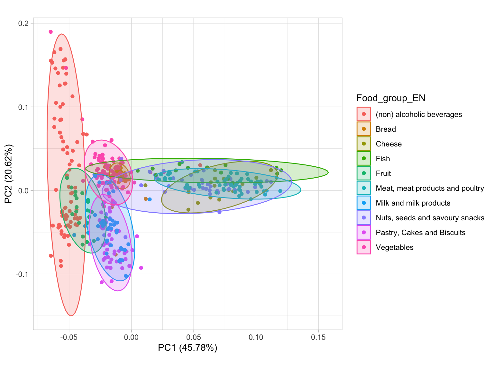
Biplots
Sometimes, it is useful to display both the sample and the variable projections on the same plot. This is what we call a “biplot”.
# the default built-in function in R is not the prettiest
# biplot(pca_tastes)
# so we can make our own biplot function (based on the two previous ones)
biplot <- function(Sample_PCs, data, pca_res, pca_var, PCx = 1, PCy = 2){
# sample projections
Sample_PCs$pcx <- Sample_PCs[,str_c(".fittedPC",PCx)] %>% unlist()
Sample_PCs$pcy <- Sample_PCs[,str_c(".fittedPC",PCy)] %>% unlist()
# correlations
correlations <- cor(data, pca_res$x) %>% as.data.frame()
correlations$pcx <- correlations[,PCx]
correlations$pcy <- correlations[,PCy]
correlations <-
correlations %>%
mutate(column = rownames(correlations))
# axes
x_lab <- str_c("PC", PCx, " (",round(100 * pca_var$percent[PCx]),"%)")
y_lab <- str_c("PC", PCy, " (",round(100 * pca_var$percent[PCy]),"%)")
arrow_style <- arrow(
angle = 20, ends = "first", type = "closed", length = grid::unit(8, "pt")
)
ggplot(Sample_PCs, aes(x = pcx, y = pcy)) +
geom_vline(xintercept = 0, col = "gray") +
geom_hline(yintercept = 0, col = "gray") +
geom_point(aes(color = Food_group_EN), size = 1.5) +
scale_color_discrete("Food group") +
geom_text_repel(
data = correlations,
aes(x = pcx, # + 0.1 * pcx / sqrt(pcx^2 + pcy^2),
y = pcy, # + 0.1 * pcy / sqrt(pcx^2 + pcy^2),
label = column),
segment.colour = NA
) +
geom_segment(
data = correlations,
aes(xend = 0, yend = 0), arrow = arrow_style
) +
xlab(x_lab) + ylab(y_lab) +
coord_fixed(pca_var$std.dev[PCy]/pca_var$std.dev[PCx])
}biplot_1_2 <- biplot(Sample_PCs, t, pca_tastes, pca_var, PCx = 1, PCy = 2)
biplot_1_3 <- biplot(Sample_PCs, t, pca_tastes, pca_var, PCx = 1, PCy = 3)
(biplot_1_2 / biplot_1_3) + plot_layout(guides = 'collect')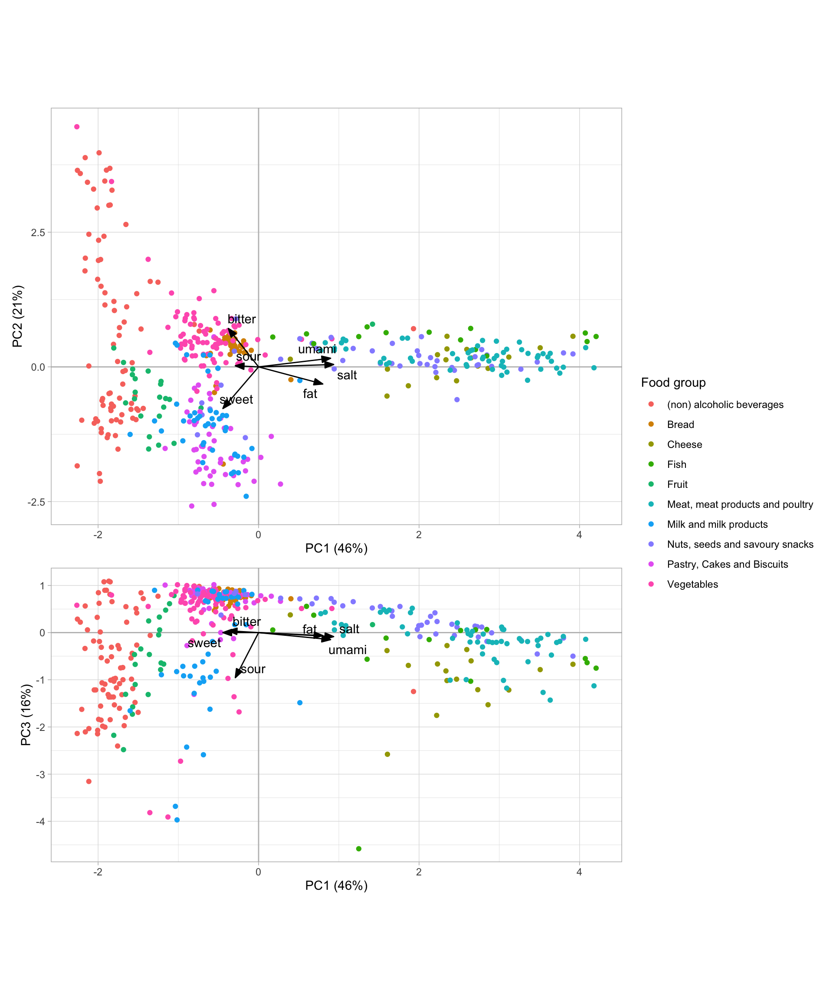
Example 2: random Gaussian data
With our first example, we had a 6-variable dataset and we saw that 3 principal components could capture over 80% of the variance. So, it seemed appropriate to conclude that taste perceptions of commonly consumed food in the NL can be describe with these 3 PCs.
Now, not all dataset lie on an underlying lower dimension space. Let’s see what happens when we perform a PCA on a 6-dimension dataset composed of uncorrelated normally distributed data.
set.seed(1)
sim_data <- matrix(rnorm(prod(dim(t))), nrow = nrow(t), ncol = ncol(t))GGally::ggpairs(sim_data %>% as.data.frame(), axisLabels = FALSE)Warning in fix_axis_label_choice(axisLabels, c("show", "internal", "none")):
'axisLabels' not in c('show', 'internal', 'none'). Reverting to 'show'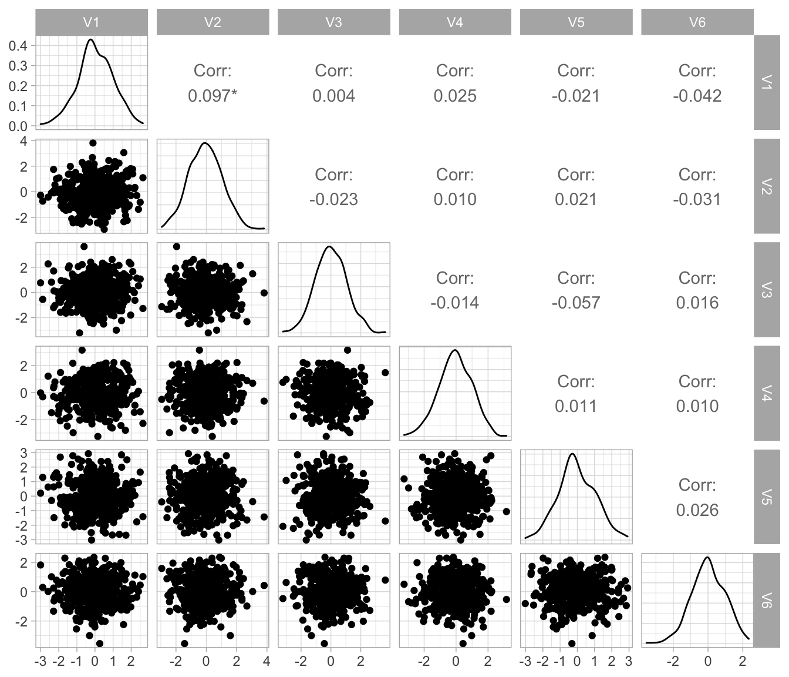
pca_sim <- prcomp(sim_data, scale = TRUE) # in theory, we do not need to scale the data as they already follow a standard normal distribution
pca_sim_var <- pca_sim %>% broom::tidy(matrix = "eigenvalues") plot_pca_var(pca_sim_var)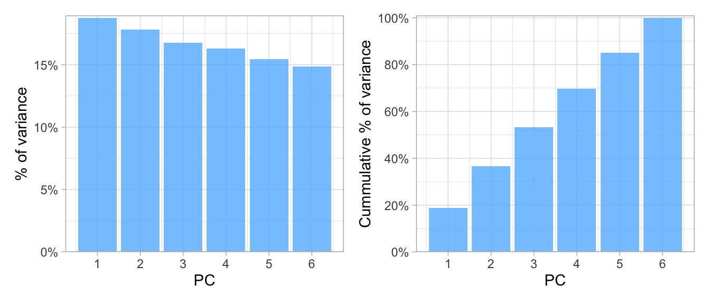
Now, we see that each variable explains roughly 16% (= 1/6) of the total variance, and that we need 5 out of 6 PC to explain over 80% of the variance.
This indicate that there is likely no linear correlation between the variables and that the data cannot be summarized in a lower dimensional space.
plot_correlation_circle(sim_data, pca_sim, pca_sim_var, 1, 2) +
plot_correlation_circle(sim_data, pca_sim, pca_sim_var, 1, 3)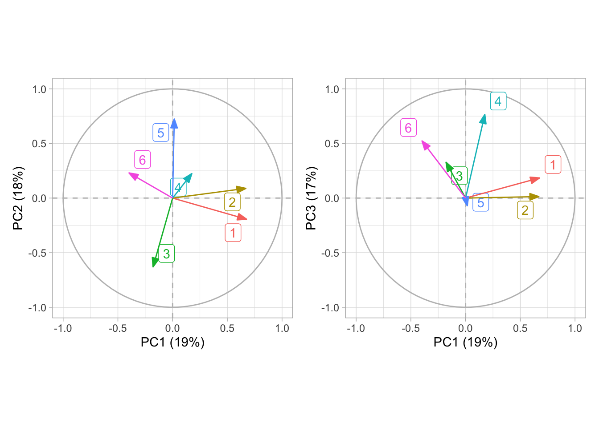
The correlation circle shows much shorter arrows: most original variables do not correlate very strongly with the principal components
Exercises
In the “Food taste” dataset, how do you interpret that the first 3 PCs are well aligned with 5 of the 6 flavors? What does it say about our taste perception?
Increase the variance of the random noise in the second simulation (the one with two latent variables). What do you observe?
Compare the coefficients for the linear combination of the latent variables with the corrleation (circle of correlation), and with the PC1 and PC2 rotations. What do you observe? What makes them different or similar? How could we make the same?
Explore the
ade4andfactoextrapackages and the functionsade4::dudi.pca,factoextra::fviz_screeplot(compare it with ourplot_pca_var)factoextra::fviz_pca_var(dudipca_taste)(compare it with ourplot_correlation_circle)factoextra::fviz_pca_ind(compare it with ourplot_sample_PCs)